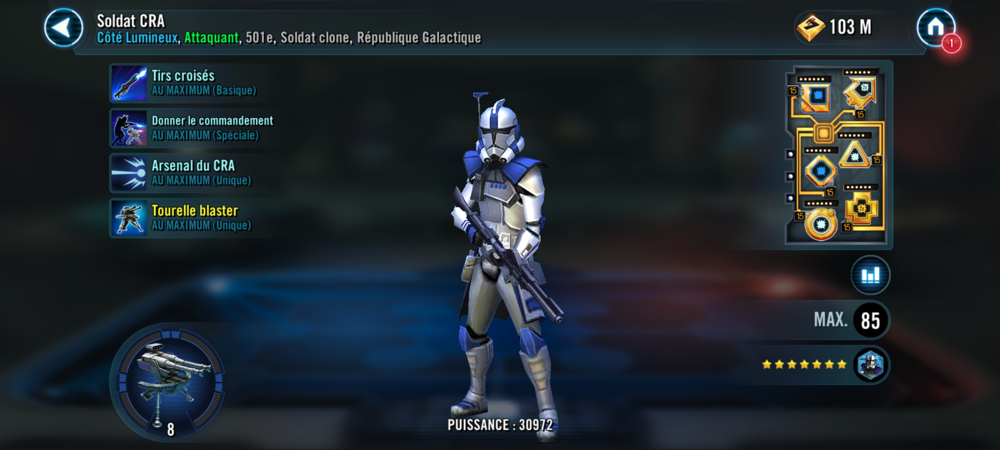

Arc Trooper
Powerful Clone Attacker that can command a Blaster Turret on the battlefield

Basic Attack: Crossfire
Deal Physical damage to target enemy. If they had no buffs before this attack, deal 30% more damage.
Special Attack: Assign Command (cooldown: 3)
Deal Physical damage to target enemy. If the Blaster Turret is present, give Command to target other Clone ally until they are defeated or until Command is granted to a different ally.
Command : The Blaster Turret assists whenever this character uses an ability
during their turn
Unique Ability: ARC Arsenal
ARC Trooper has +35% counter chance. ARC Trooper always has Command while the Blaster Turret is present and summons a Blaster Turret to the ally slot at the start of the encounter and when he revives. The Blaster Turret will assist when ARC Trooper attacks out of turn.
Blaster Turret
[Basic]: Shattering Blast: Dispel all buffs on target enemy and deal True damage to them, which can't be evaded.
[Unique] Summoned Object: This object's stats scale with the summoner's stats. This object can only be summoned to the ally slot if it's available. This object can't be summoned in certain raids. This object can't be revived. If an effect counts defeated units, this object doesn't count. When there are no other allied combatants, this object escapes from battle. A unit can't be revived if this summoned object exists in their slot.
[Unique] Object Properties: This object can't be targeted, is immune to damage and status effects, and does not take a turn. When there are no allies with Command, the Blaster Turret is destroyed.